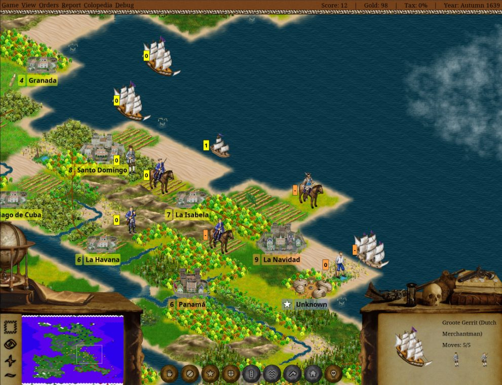
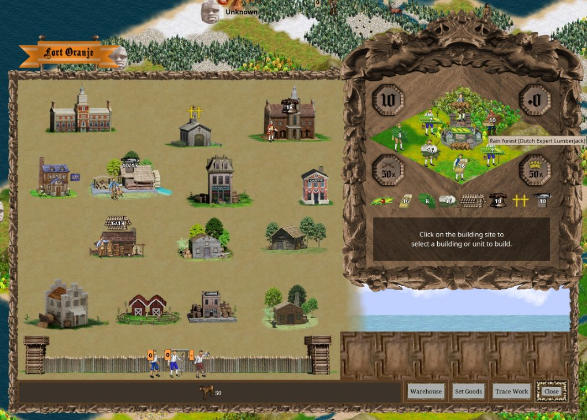
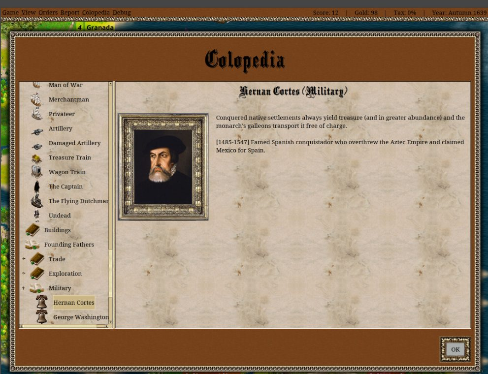

What the game is
A colonization and trade strategy game. You manage colonists, production, ships, natives, diplomacy, and independence momentum.
A free, open-source strategy game inspired by Colonization: explore the New World, found colonies, trade with Europe, manage specialists, negotiate, and eventually fight for independence.
Choose FreeCol if you want a deeper historical economy game with colony management and long-term planning. It is slower and more detailed than the browser arcade, but the mirrored manual makes it a good offline library needs game files.
A colonization and trade strategy game. You manage colonists, production, ships, natives, diplomacy, and independence momentum.
The official website mirror, screenshots, user manual, and platform installers are present locally.
The official release clients are stored locally, and the portable ZIP launch-smoked on the VM into a new single-player game with screenshots and logs captured.
FreeCol 1.2.0 official packages are stored locally, including Windows-with-Java, macOS, Java installer, and portable ZIP.
Best Windows default because Java is bundled.
Download EXEDMG for newer Apple Silicon Macs.
Download DMGDMG for Intel Macs.
Download Intel DMGCross-platform fallback for desktops with Java.
Download JARExtract-and-run fallback.
Download ZIPUse the local shelf for hashes and the mirrored manual for rules.
Open download shelfSelected screenshots are cached inside this hub so the arcade can explain the game offline.



This is a starter guide, not a full manual. Use the local mirror links for deeper offline reading where available.
Find good colony sites near food, lumber, ore, and trade goods.
Raw materials become tools, guns, cloth, cigars, coats, or other exports.
Europe is your early market, but tax pressure and politics change the long game.
Expert colonists produce far more efficiently than generic workers.
Liberty sentiment, defense, and economy need to be ready before the final war.
These links point at the current GannanNet mirror. If the internet is down, the local mirror links should still work.
Official website mirror and FreeCol project pages.
See ATTRIBUTION.txt for screenshot and source notes.
Promotion path: VM Java ZIP launch check passed. Next useful check is a laptop install/play smoke from the local downloads, then decide whether LAN multiplayer hosting is worth promoting or whether this stays as a single-player strategy library entry.
Admin expectation: FreeCol may not need always-on hosting, but it does need installer/version tracking so the arcade can tell players exactly what to launch offline.
This tells players whether the entry is ready to play or only ready to research.
/var/www/html/mirrors/freecol, about 83 MB
freecol-user-manual.html is mirrored
Report: qa/reports/native-client-launch/freecol-lan-20260620T095834Z/report.txt